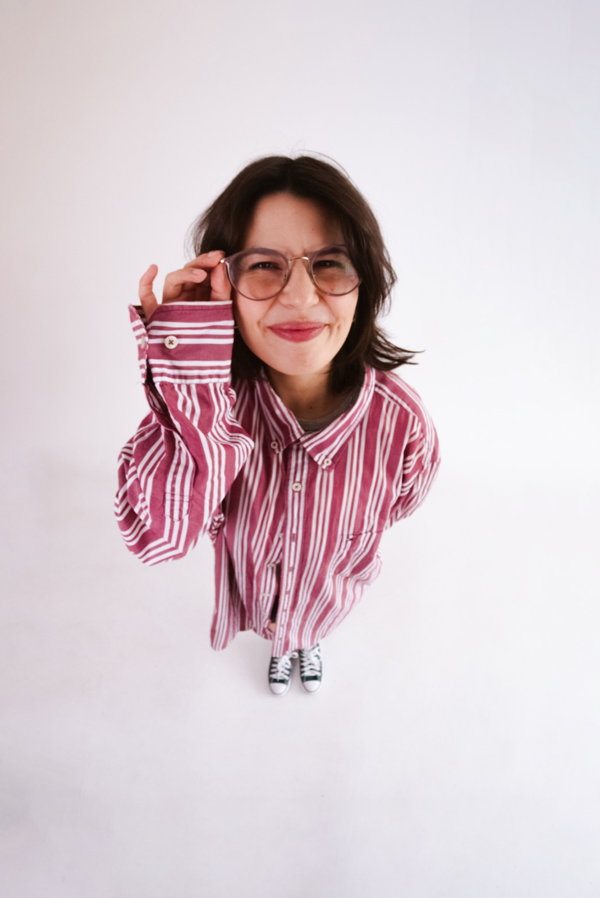

I’m a Senior Content Designer who likes a good challenge: making complex digital experiences feel simpler and more human.
I started my career in UX Writing, but over time I became increasingly interested in the bigger picture: how content shapes products, how teams make decisions, and how we can create better systems for both users and the people building the experience.
I like working with people from different disciplines, asking questions, challenging assumptions, and figuring things out together.
For me, good content isn’t just about finding the right words. It’s about understanding the problem well enough to know what needs to be said (and what doesn’t).
I’ve always been drawn to international environments. During college, I spent a year studying in the US, and today I’m excited about taking that experience further by working with global teams and contributing to products used by people around the world.
If you’re curious about the work behind the words, take a look around. :)
Content Designer Sênior que adora um bom desafio: transformar produtos digitais complexos em experiências simples e humanas.
Comecei minha carreira no UX Writing, mas com o tempo fui me interessando cada vez mais pelo contexto geral: como o conteúdo molda produtos, como as equipes tomam decisões e como podemos criar sistemas melhores tanto para os usuários quanto para quem está construindo a experiência.
Gosto de trabalhar com pessoas de diferentes áreas, fazer perguntas, investigar cenários e descobrir o melhor caminho em parceria.
Para mim, um bom conteúdo não é só encontrar as palavras certas. É entender o problema a fundo para saber o que precisa ser dito (e o que não precisa).
Sempre me atraí por ambientes internacionais. Na época da faculdade, passei um ano estudando nos EUA e, hoje, quero levar essa bagagem ainda mais longe: trabalhando com times globais e criando produtos usados por pessoas no mundo todo.
Se você tem curiosidade de ver o trabalho que existe por trás das palavras, fique à vontade para dar uma olhada por aqui. :)

UX Writer
Brazilian fintech unicorn connecting global platforms to Latin American consumers. Processes $10B+ a year for 1,000+ brands in 15+ countries. Unicórnio brasileiro que conecta plataformas globais aos consumidores latino-americanos. Processa mais de US$ 10 bi por ano para 1.000+ marcas em 15+ países.
UX Writer
B3-listed fintech (CASH3) and pioneer of Brazil's cashback model, with 30+ million registered users and 3,000 partner stores. Fintech listada na B3 (CASH3) e pioneira do modelo de cashback no Brasil, com mais de 30 milhões de usuários e 3 mil lojas parceiras.
Content Designer
Brazilian online travel agency that has served over 9 million travelers across an international footprint. Agência de viagens online brasileira que já atendeu mais de 9 milhões de viajantes, com atuação internacional.
Freelance Product DesignerProduct Designer freelance
Brazilian cultural production powerhouse behind Latin America's largest theater festival, Festival de Teatro de Curitiba. Produtora cultural responsável pelo maior festival de teatro da América Latina, o Festival de Teatro de Curitiba.
Senior Content DesignerContent Designer Sênior
Category leader in Brazilian corporate benefits. Backed by top global VC firms, serving 60,000+ client companies and over 1 million active users. Líder de categoria em benefícios corporativos no Brasil. Investida por fundos globais de venture capital, atende mais de 60 mil empresas e 1 milhão de usuários ativos.
Amanda is one of the best people I’ve worked with. She makes everyday life at work funnier and lighter for everyone around her and she’s just one of these people we can always count on. She is a natural leader, with a strong sense of responsibility and often driving initiatives involving the whole team, encouraging everyone’s development. Anyone would be lucky to have her on their team.
“Amanda é uma profissional estratégica, colaborativa e orientada a dados. Olhando sempre o todo, simplificou jornadas complexas, aumentando a conversão e reduzindo a taxa de abandono. Criou o Guia de Escrita da empresa, garantindo mais consistência na comunicação interna e de produto. Além de tudo, é uma pessoa leve, gentil e super disponível. Foi um grande prazer trabalhar com ela!”
During my time at EBANX, I had the privilege of collaborating with Amanda, a remarkable writer who possesses exceptional technical skills. What sets her apart is her unwavering dedication to delivering beyond the bare minimum. Amanda proactively approaches her work, excels in teamwork, considers the scalability of her outputs, and conducts thorough research with finesse.
“A Amanda é uma profissional incrível, organizada e talentosa! Todas as trocas que tivemos foram ricas e ela sempre me ensinou muito sobre Content Design. Foi um prazer trabalhar com ela na mesma tribo e no mesmo squad. Seu papel dentro da empresa sempre foi estratégico, além dela dar visibilidade para o valor da área de content. Por isso, a empresa que tiver a Amanda no time será muito sortuda.”